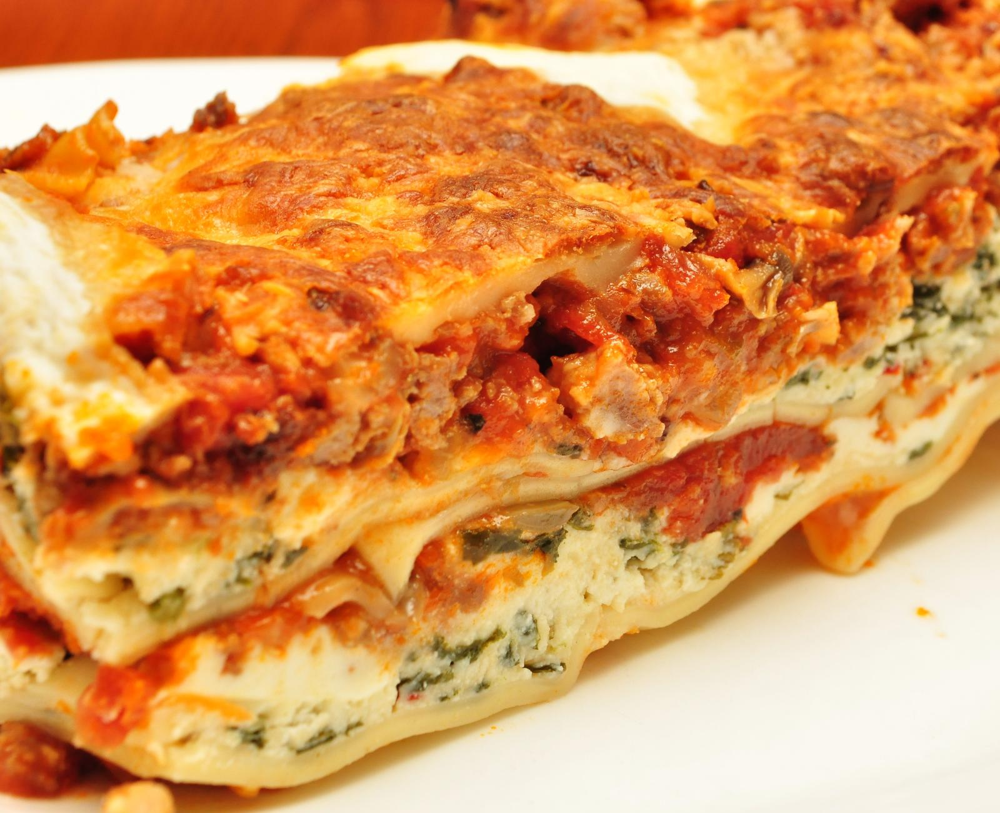

Lasagna

Description
From what I can tell, the secret behind Alton's lasagna is the addition of a little sugar to the sauce and using a bit more cheese than most other recipes.
There are a few minor tweaks to his original recipe that I found necessary, for example adding a dash of wine vinegar to the sauce and changing the amount of Parmesan cheese.
Ingredients
- 2 teaspoons extra virgin olive oil
- 1 pound ground beef chuck
- 1/2 large bell pepper (green, red, or yellow), diced (about 3/4 cup)
- 2 cloves garlic, minced
- 1 (14 ounce) can crushed tomatoes
Steps
- Put pasta water on to boil
- Brown the ground beef
- Cook the bell pepper, onions, garlic, add back the beef
- Transfer to medium sized pot, add tomatoes and remaining sauce ingredients to build the sauce
- Boil and drain the lasagna noodles
- Heat the oven to 375°F
- Assemble the lasagna
- Bake
- Cool and serve